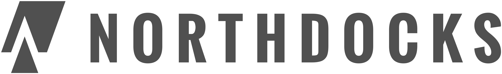

PDF: Strg+P → Ziel „Als PDF speichern“ · Papier A4 · Ränder Keine · Hintergrundgrafiken an · Kopf-/Fußzeilen des Browsers aus.

Festanstellung · Vollzeit · Büro Kiel oder Monheim · Northdocks GmbH · Oktober 2026
GodView und Web-Schicht: SvelteKit, TypeScript, Cesium, Docker, Postgres, Digital Twins, Punktwolken, Hosting in DE. Festanstellung, Büro Kiel oder Monheim, nicht remote.
KI-Werkzeuge als Default (Cursor, Agents, Tests, Refactors). KI-Coding-Tools sicher und produktiv, Qualität durch Review, Tests, Security. Wer das nicht will oder kann, passt nicht auf diese Rolle.
Unbefristete Festanstellung an der Schnittstelle Twin/VR, KI-first Kultur. Kiel oder Monheim nach Abstimmung.
kontakt@northdocks.com · Betreff „Web/Twin Fest, Kiel/Monheim“ · Lebenslauf · Pflicht: „So arbeite ich mit KI“ (5 bis 8 Sätze) · Portfolio · Standort · Start
Anforderung (alle Rollen): Sichere, produktive Nutzung von KI-Coding-Tools.
Datenschutz: Bewerbungsunterlagen nur für das Verfahren; Speicherung in der Regel 6 Monate danach, sofern keine gesetzliche Pflicht. Details: northdocks.com (Datenschutzerklärung).